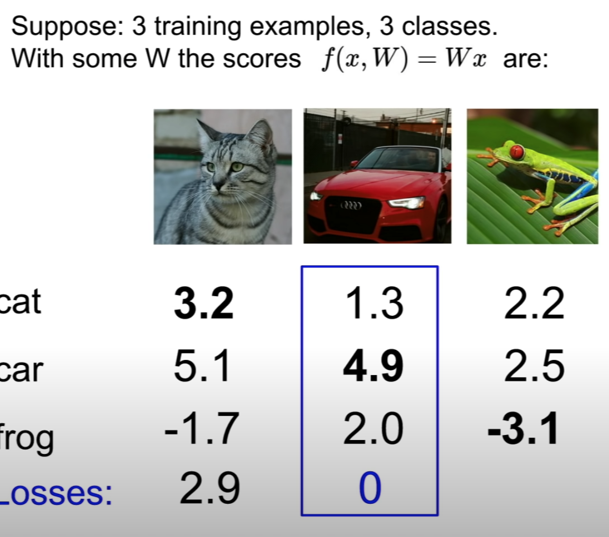

To calculate the loss for predicting car:
max(0, cat score - car score + 1) + max(0, frog score - car score + 1) = max(0, -2.6) + max(0, -1.9) = 0
after using the same method to calculate each of the classes, the averge is the result: (2.9 -> for cat + 0 -> for car + 12.9 -> for frog) / 3 = 5.27
This term makes sure to choose "simpler" W instead of complicated ones that only fit training data, so that the power is lower for each term (high penalty for using high power poly).
score is the probabilities for each class, and the sum of all classes equals to one (100%).
Loss for each category:
where
plug in to the first equation:
The min loss is 0 and max loss is +inf
step_size is also the learning rate, it's the first thing to set
Use when there are a lot of training set, in each iteraion, take a samples data from the training set (typically 32/64/128/256) called minibatch